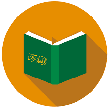
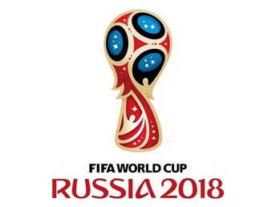

حملة الحج
1
حملة الحج لغير المسلمين كانت لإظهار المساواة بين البشر وأنه لا فرق بين ملك
وعبد، الرب واحد واللباس واحد بروح المحبة والأخلاق ، وأسلم بفضل الله الكثير
على خلفية الفيديو الذي تم وضع فكرته وإعداده وإنتاجه من قبل إدارة مشروع هدهد للتعريف بالإسلام.
حملة الكريسماس
2
تم تصوير فيديو احترافي في إيطاليا باللغة الإنجليزية ومدته دقيقتين ونصف
وتم تسليط الضوء على تساؤلات بسيطة من طفل صغير لأبيه بكل براءة، لماذا قاموا بصلب المسيح؟ فأجاب الأب: بسبب خطيئة أبينا آدم لذلك ضحى من أجلنا،
فتساءل الطفل! هل سأعاقب يا أبي على خطئك الذي فعلته هذا الصباح بقطعك لإشارة المرور الحمراء؟! وحصل على نسبة مشاهدات بالملايين وأسلم بسببه
الكثيرون بفضل الله خلال أيام قلائل.
حملة اليوم العالمي للعنف ضد المرأة
3
تعريف غير المسلمين بأهمية المرأة في الإسلام وأنها رمز الكرامة والمساواة في
الحقوق ، وجاء الدين لحمايتها وتحريرها فعليا من عبودية الشهوات والطامعين ، وتم عمل فيديو خاص بالحملة مع بطاقات لافتة ونشرها عالميا وكان لها صدى جميل
أسلم على إثره الكثير.
حملة الام
4
كرم الله الإسلام الأم وجعل طاعتها من طاعة الله جل جلاله وجعل صلتها الدائمة واجبة على الأبناء طوال السنة ومن هنا جاءت فكرة تقديم هذه المعاني السامية لغير المسلمين ممن يزور أمه يوما واحدا في السنة.

حملة القرآن الكريم
5 - حملة دائمة على مستوى العام
أعظم شيء ندعو فيه إلى الله هو القرآن الكريم الذي تحدى الله عز وجل فيه الإنس والجن أن يأتوا بمثله ، وعجزوا كليا عن ذلك لما فيه من الآيات والحقائق العلمية التي سبقت المفكرين والعلماء في اكتشافها ، لذلك تم إطلاق حملة القرآن الكريم على مدار العام لتنبه العالمين على عظمة هذا الكتاب ، وبالتالي تشجيعهم للسؤال والبحث ، ونسأل الله أن يوفقنا لنبلغ دعوة الرسل وأن يوفق الناس للهداية.
حملة الفالنتين
6
حملة الفالنتاين لغير المسلمين كانت لإظهار منظور الحب في الإسلام ، وماذا يعني؟ وهل الحب
مقتصر على جزئية الحب بين الرجل والمرأة؟ أم أنه أعم وأشمل؟ وفتح باب الحوار مع الكثيرين
ممن رأوا البطاقات الجذابة ومناقشتهم (واهتدى بفضل الله العشرات).

حملة كأس العالم
7
مشروع هدهد يقدم أسلوبًا دعويًا مبتكرًا وجديدًا يعد الأول من نوعه للتعريف بالإسلام ويحرص على تقديم هذا الدين الحنيف لغير المسلمين في كافة المحافل الدولية وذلك لتفعيل الرسالة الدعوية بالأساليب التكنولوجية الحديثة في سبيل نشر دين الله
وردّ أي تهم أو افتراءات على الإسلام وبيان أنه دين التسامح والسلام والمحبة والحرية والعدالة والمساواة.
فكان لا بد من إنتاج محتوى إعلامي احترافي في مناسبة كأس العالم والذي أقيم في (روسيا) والذي شاهد مبارياته العالم
بأسره وكانت فرصة جميلة لفتح الآفاق لعقول كثير من الناس وتنبيه الغافلين لآيات الله.
حملة يوم السلام العالمي
8
كلام العالم كله اليوم عن السلام ، والدين الإسلامي الذي جعل من شعائره إلقاء تحية السلام على من عرفت ومن لم تعرف لهو جدير بتقديمه لمن يبحث عن السلام جل جلاله الذي من أسمائه السلام ومن هذه الكلمات الرقيقة التي تدخل إلى حنايا القلب تم بحمد الله إطلاق حملة يوم السلام العالمي لتلامس قلوب الباحثين عن الحقيقة.